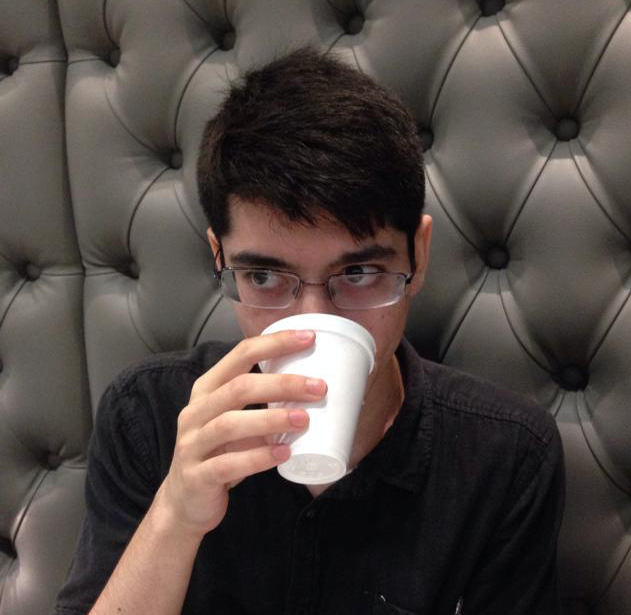

Objective
To belong to a company where I am challenged to learn more about the world of Software Development while applying what I've learned at University. I am Passionate about Web Development, Distributed Systems, Software Testing, and the intersection of the three.